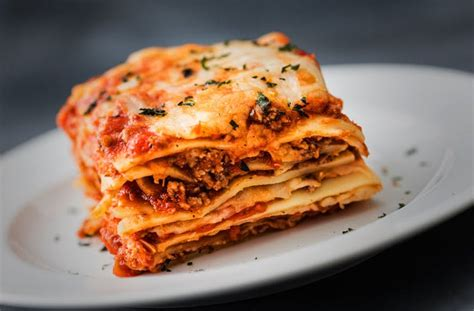

Lasange

Description
Italian dish that I love
Ingredients
- Lasange sheets or pasta
- Lean beef
- Salt and pepper
- Jar of spaghetti sauce
- 1 clove of garlic
- Shredded mozzarella
- Shredded cheddar cheese
- Ricotta cheese
Steps
- Bring a large pot of lightly salted water to a boil. Add pasta and cook for 8 to 10 minutes or until al dente; drain.
- Preheat oven to 350 degrees F (175 degrees C). In a large skillet over medium-high heat, brown beef and season with salt and pepper; drain. Stir in spaghetti sauce and garlic and simmer 5 minutes.
- In a medium bowl, combine mozzarella, Cheddar and ricotta; stir well. In 9x13 inch pan, alternate layers of noodles, meat mixture and cheese mixture until pan is filled.
- Bake in preheated oven for 30 minutes, or until cheese is melted and bubbly.